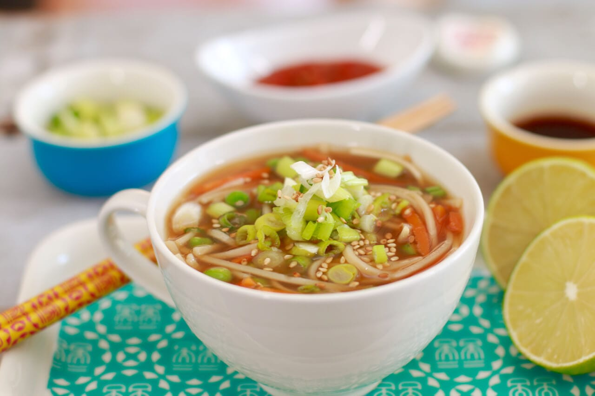

Homemade Pizza

Description
This is a delicious bowl of microwave ramen noodles. This is a classic
that is easy to please any guests and easy to make. We've looked
around the internet for the best homemade pizza recipe so you don't
have to.
Ingredients
- Microwave ramen noodles
- Frozen vegetables
- Soy sauce
Steps
-
Microwave the Ramen until the noodles are firm and fully cooked.
Feel free to add more seasonings once cooked like fish sauce,
more soy sauce etc. The soup is very forgiving, you can get really
creative with your ingredients and flavors here.
-
Cooking time given is based on my 1200W Panasonic Inverter
Microwave so your timing might vary. I suggest checking it after
1 minute and go from there.